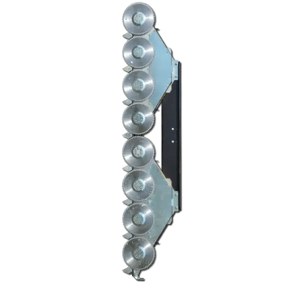
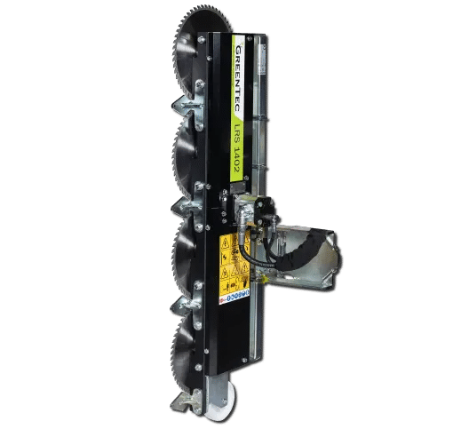
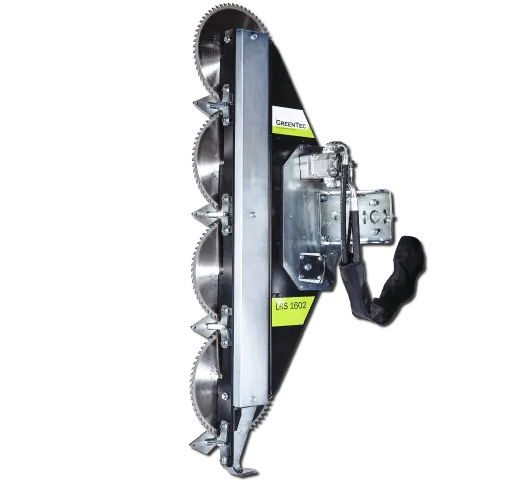
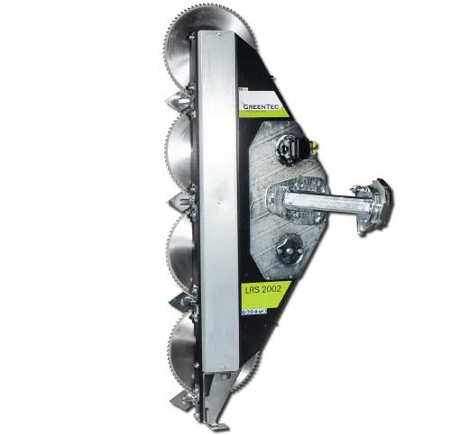
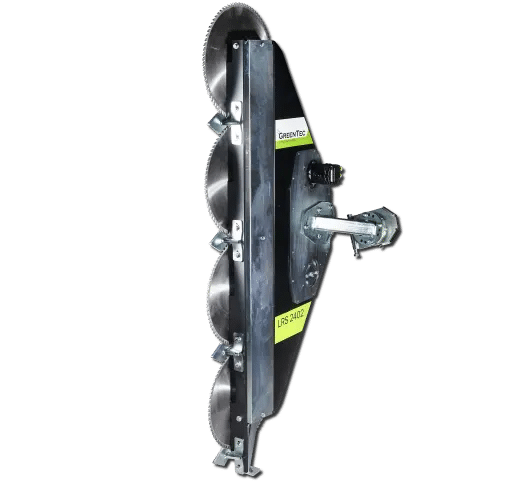

Quadsaw tree trimming attachments
Hydraulic saw attachments for orchards, hedgerows, shelterbelts and forest access routes. Compare Quadsaw and Twinsaw models.
Compare the range ↓Explore GreenTec hydraulic tree-trimming saw attachments for orchards, hedgerows, shelterbelts and forest access routes. The Quadsaw range offers working widths from 1.4 to 2.4 m and model-specific branch capacities up to 21 cm.
Match the saw head to a suitable tractor, loader, telehandler or excavator using the correct arm or Multi Carrier arrangement. Browse the Quadsaw and Twinsaw products below, then compare the four Quadsaw models in the selection guide.
Browse Quadsaw and Twinsaw models

Greentec LRS 2002 Twinsaw
Hydraulic saw attachment for trimming trees and hedgerows in agricultural areas and maintaining forest access routes. Check the LRS 2002 specification for your carrier.
View detailGreentec LRS 2402 Twinsaw
Hydraulic saw attachment for agricultural hedgerows and forest maintenance. View the LRS 2402 model specification and confirm the mounting arrangement with DTE.
View detail
Greentec Quadsaw LRS 1402
Four-blade hydraulic limb saw with a 1.4 m working width, 48 kg head weight and a maximum branch thickness of 10 cm.
View detail
Greentec Quadsaw LRS 1602
Four-blade hydraulic limb saw with a 1.6 m working width and a maximum branch thickness of 12 cm.
View detail
Greentec Quadsaw LRS 2002
Four-blade hydraulic saw with a 2.0 m working width and a maximum branch thickness of 16 cm, for hedgerows and forest access routes.
View detail
Greentec Quadsaw LRS 2402
Four-blade hydraulic saw with a 2.4 m working width and a maximum branch thickness of 21 cm, for hedgerows and forest maintenance.
View detailNo matching models
Try another model name or keyword.
Compare Quadsaw working width and branch capacity
Select a saw around the branches you need to trim, the width of cut and the carrier you plan to use. Compare the four Quadsaw models below.
Swipe to compare all columns.
| Quadsaw model | Working width | Maximum branch thickness |
|---|---|---|
| LRS 1402 | 1.4 m | 10 cm |
| LRS 1602 | 1.6 m | 12 cm |
| LRS 2002 | 2.0 m | 16 cm |
| LRS 2402 | 2.4 m | 21 cm |
Carrier weight, hydraulic flow, mounting and stability at reach must suit the complete combination. Read the tractor and Multi Carrier sizing guide or check the telehandler guide before confirming your setup with DTE.
Frequently asked questions
Can a Quadsaw be used as a tractor-mounted tree-trimming attachment?
Yes. Quadsaws can mount on tractors and front loaders using compatible boom arms or Multi Carriers. Excavator and telehandler arrangements are available for selected models. Check the exact saw, carrier and mounting combination with DTE.
Which Quadsaw cuts the thickest branches?
The LRS 2402 has the largest maximum branch thickness in this Quadsaw range, at 21 cm. The LRS 1402, 1602 and 2002 are listed at 10, 12 and 16 cm respectively. Use the full product specification when selecting a model.
How have customers used Quadsaws for hedging?
At Yellingbo Olive Grove, Howard Meltzer’s published story describes pruning around 2,000 olive trees in approximately 10 days with an LRS 1602 system. Pinecliffe’s story reports that one operator could complete work that previously needed two or three people. These are individual customer experiences. Read the Yellingbo story and the Pinecliffe story.
Guides and product information
- Matching a tractor and Quadsaw system
Review the carrier-weight and hydraulic-flow guidance.
- Matching a telehandler and Quadsaw system
Check load-chart capacity, working reach and stability considerations.
- Yellingbo Olive Grove: mechanising orchard hedging
See how Howard Meltzer used a Quadsaw system to change the pruning routine.
Match a Quadsaw to your machine and crop
Send DTE your carrier make and model, hydraulic flow, required working height and branch size. Describe the orchard, hedgerow or access route you maintain so the team can confirm the saw and mounting combination and prepare a quote.